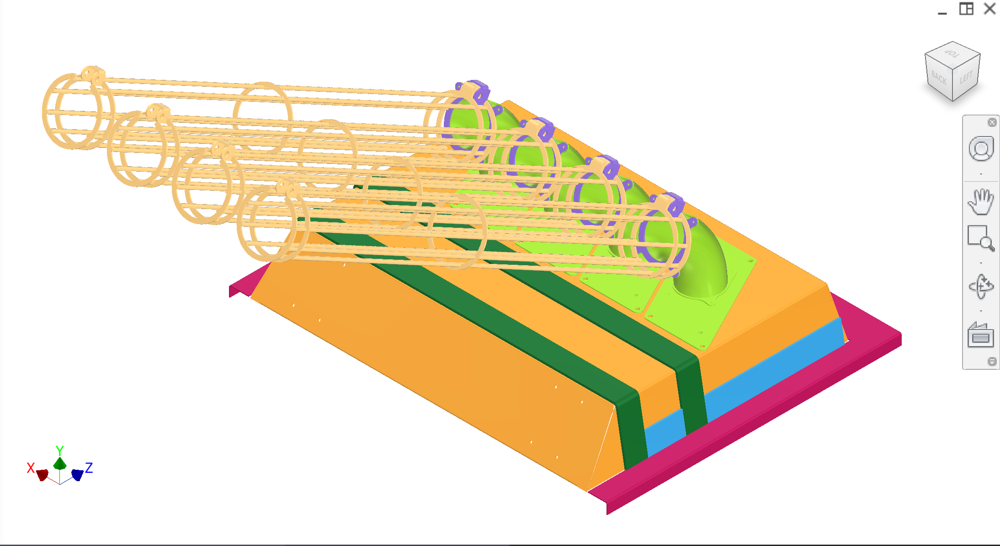
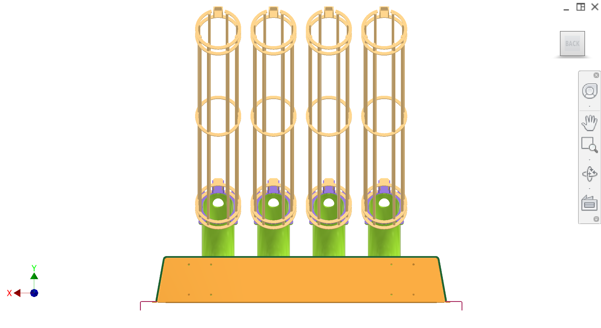
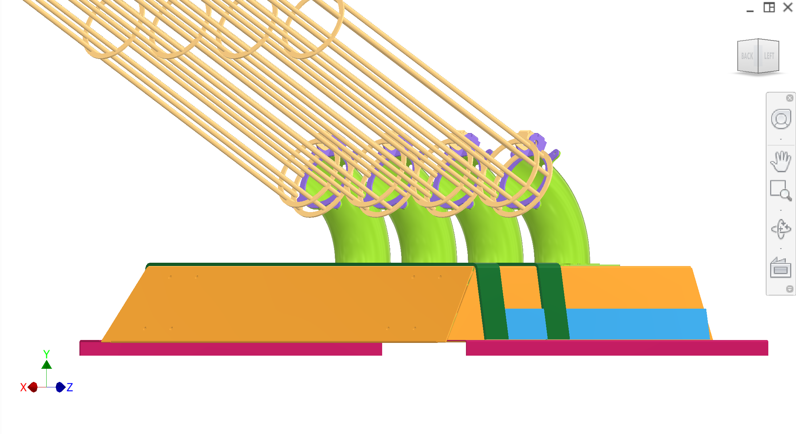
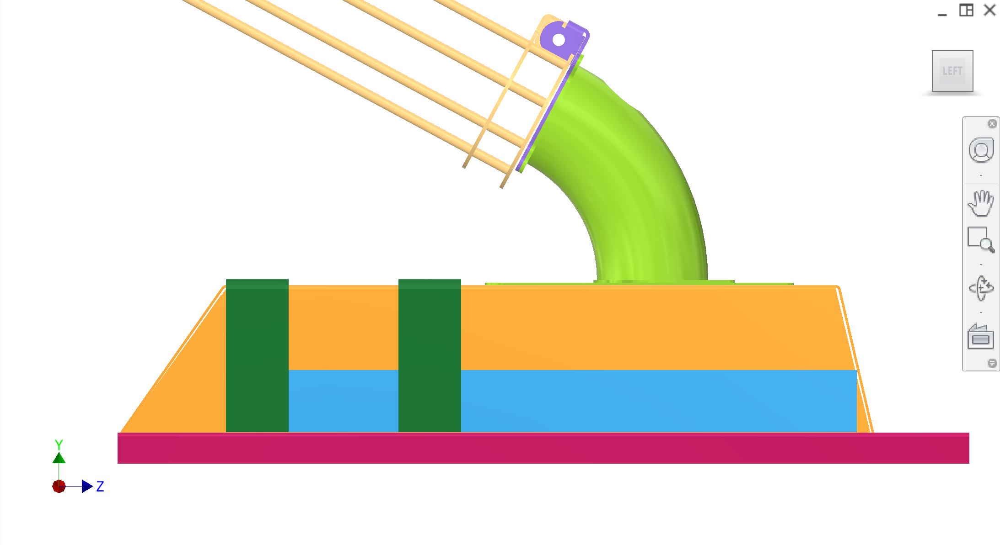
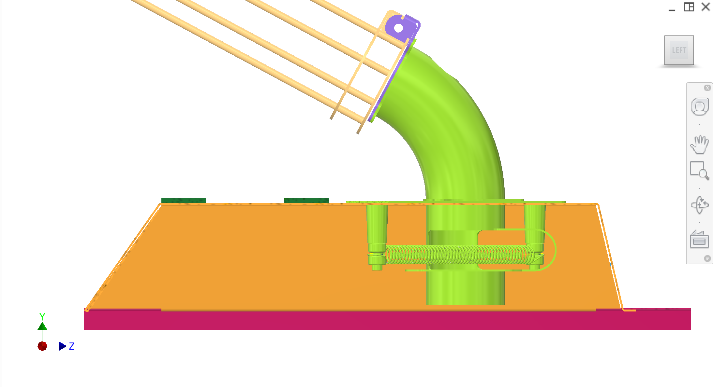
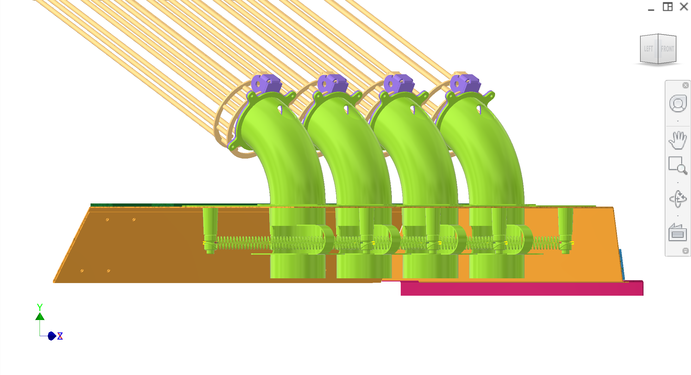
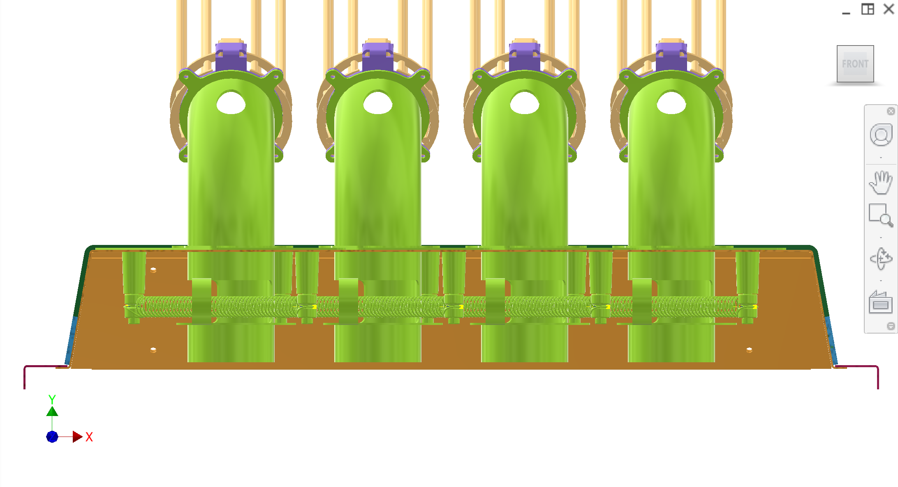
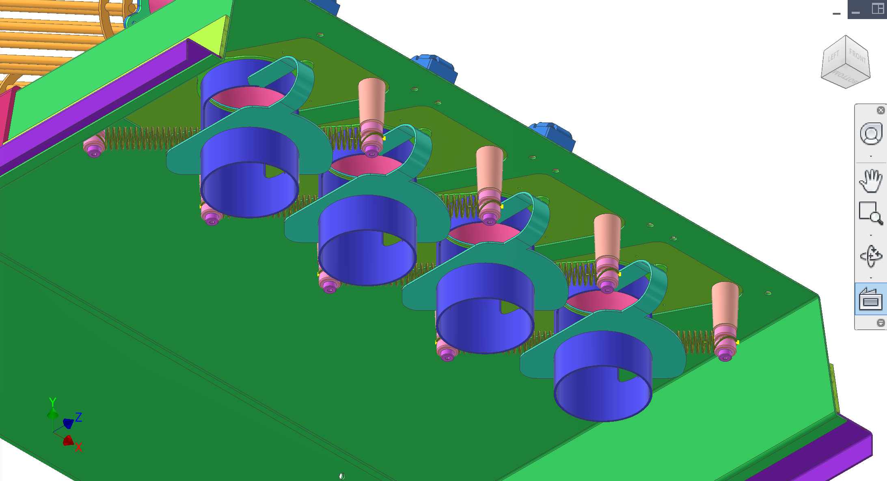
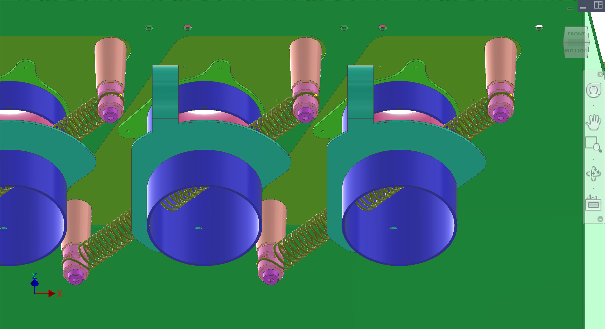

Feeding subassembly(updated 2026-03-20) — per-unit detail: mount plate, 90° entry tube, straight tube, spring guide, sync spring; 8 CAD views and colour key.
Feeder body(updated 2026-03-20) — shell/lid/bracing; rotates on hinge for access and washdown/CIP.
Entry tubes(updated 2026-03-20) — adjustable-height, removable tubes connecting upstream lines to each feeding unit.
Introduction
The fruit intake system (subsystem 6) reliably delivers one orange per cycle to each of the machine's four extraction stations. It consists of a hinged feeder body (shell and lid that opens for access and CIP), structural bracing, per-station feeding subassemblies (90° tube, straight tube, sync spring, and mount plate), and adjustable entry tubes connecting to upstream sorting lines. During each cycle, oranges stacked in the entry tubes roll through the 90° tube onto a sync spring; the spring gates the column and releases a single fruit onto the fruit support below.
Feeder body — orange-tan base; rotates on feeder hinge for access/CIP
Brace — dark green + light blue; welded to lid, supports system
Feeding subassembly — one per station; curved tube, sync springs, mount plate, 90° tube
Entry tubes — light yellow; guide fruit into each feeding subassembly
Top-level feeder views
CAD views showing feeder body, brace, feeding subassembly, and entry tubes. Refer to Figure 1, Figure 2, etc.









Figure 1. Top-level — feeder body (orange-tan), lime green feeding subassembly, light yellow entry tubes, dark green and light blue brace, magenta base.
Add figure: Helical conveyor interface — infeed height to feeder base (if not obvious in gallery).
Add figure: Open-hinge service — feeder body swing clearance for CIP and tube removal.
Discussion
Rough design & intent
System goal — Release one orange per cycle into each extraction station.
Flow sequence — Upstream sorter/lines → adjustable entry tubes → 90° tube → orange rests on sync spring while a column stacks above → pusher opens spring during compression to drop one orange onto fruit support → spring closes on return stroke to hold the next orange while the staged orange drops into the peelers.
Modularity — Feeding subassembly tubes are riveted to a mount plate and the mount plate is riveted to the feeder body so modules can be swapped/iterated by drilling out rivets.
Known issues & risks
Jams / double-drop — Sync spring must reliably gate a fruit column and release only one orange at a time without wedging.
Collision envelope — Fruit support and pusher must never collide with entry tubes/90° tubes; pusher lateral flex can cause catastrophic collisions with tubes/lids.
Washdown — This region is in/near splash zone; edges and joints must be cleanable and safe to handle.
DFM & manufacturing (China)
Tube standards — Feeding subassembly uses 3″ NPS / DN90 Sch 5S as a baseline; contractor may choose China-available equivalents that preserve function and cleanability.
Hinge/pins — Entry tube adjustability relies on pinned joints; contractor to propose robust hardware and anti-loosening.
CIP nozzle integration — 90° tube includes a port/tube for a nozzle to spray down the entry/spring zone; nozzle and mounting details TBD.
Questions for contractor
Validate the sync spring gating concept for reliable one-at-a-time release (fruit size range, friction, jam/double-drop failure modes) and propose improvements.
Propose tube/hinge/pin designs that are adjustable, rigid when locked, and fast to disassemble for seasonal maintenance.
Propose a CIP nozzle placement and cleaning strategy for the entry tube and spring region (spray direction, drain paths, avoiding dead zones).
Subassemblies
Feeding subassembly — mount plate, flanged 90° entry tube, straight tube and spring guide, sync spring (8 CAD views, colour key, parameters).